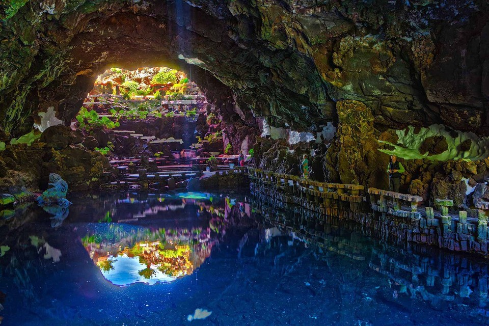

Zwiedź Lanzarote!!!
Lanzarote, najbardziej unikalna spośród Wysp Kanaryjskich, to prawdziwy raj dla miłośników wulkanicznych krajobrazów i ekologicznego piękna. Nazywana „Wyspą Wulkanów”, zachwyca surrealistycznymi widokami, które przypominają powierzchnię Marsa. Dzięki temu Lanzarote jest miejscem, które łączy surową naturę z ludzką kreatywnością, oferując niezapomniane doświadczenia.
Serce wyspy stanowi Park Narodowy Timanfaya – rozległe pole lawy i wulkanicznych stożków, gdzie można podziwiać potęgę natury. Niezwykłe krajobrazy, w tym kolorowe skały i gorące gejzery, są prawdziwym spektaklem dla odwiedzających. Warto wybrać się na wycieczkę wielbłądem lub specjalnym autobusem, by w pełni docenić ten wulkaniczny cud.

Lanzarote to także wyspa harmonii między człowiekiem a przyrodą. Duża w tym zasługa wizjonerskiego artysty i architekta Césara Manrique, który pozostawił po sobie unikalne dzieła, takie jak Jameos del Agua – system jaskiń wulkanicznych zbudowany w zgodzie z otaczającym krajobrazem, czy Mirador del Río, z którego rozciąga się spektakularny widok na pobliską wyspę La Graciosa.
Plaże Lanzarote są równie wyjątkowe. Od złocistych piasków Playa Blanca i Papagayo po czarne, wulkaniczne plaże w Puerto del Carmen – każda z nich oferuje coś innego. Wyspa jest również rajem dla surferów, z doskonałymi warunkami do sportów wodnych, takimi jak windsurfing czy kitesurfing.
Kuchnia Lanzarote zachwyca prostotą i smakiem. Lokalne specjały, takie jak świeże ryby, papas arrugadas z mojo czy kanaryjskie sery, doskonale łączą się z winami i tropikalnymi owocami uprawianymi na wyspie.
Lanzarote to miejsce, które zaskakuje na każdym kroku – od niezwykłych krajobrazów po dzieła sztuki wtopione w naturę. To wyspa, która zachęca do refleksji, inspiruje i pozostawia w sercach odwiedzających niezapomniane wrażenia.